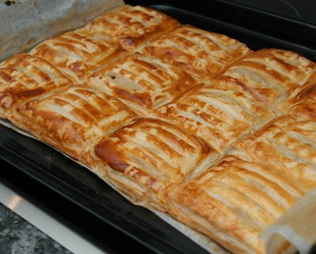

| Zutaten für 4 Personen: | |
| 400 g | Schwarzwurzeln |
| 10 g | Butter |
| 10 g | Mehl |
| 2 dl | Gemüsebouillon |
| 2 El | Halbrahm |
| Salz, Pfeffer, Muskat | |
| 2 Blatt (640 g) | ausgewallter Blätterteig, viereckig |
| 20 g | Paniermehl |
| 1 | Ei |
Die Schwarzwurzeln im Dampfkochtopf 3-4 Minuten kochen.
Die Schale abziehen. Geht am besten indem man die Schale quer zur Achse mit den Fingern oben und unten auf eine Seite zieht. Sie wird brüchig und löst sich relativ leicht ab.
Die Schwarzwurzeln in Stücke schneiden die nachher auf die Teigrechtecke passen.
Den Teig auswallen und gleichmässige Rechtecke ausschneiden. Die Hälfte der Rechtecke auf ein mit Backtrennpapier ausgekleidetes Backblech geben.
Danach mit Paniermehl bestreuen. Mit einem Pinsel einen Rand von 1cm an den Kanten der Rechtecke frei machen. Die andere Hälfte der Rechtecke lamellenartig einschneiden. Die Schwarzwurzeln auf die Teigrechtecke legen.
In einem Pfännchen die Butter schmelzen und das Mehl darin dünsten, ohne es braun werden zu lassen.
Pfännchen vom Herd nehmen und unter Rühren die Bouillon beifügen. Wieder auf den Herd stellen und ca. 10 Minuten kochen.
Mit dem Rahm verfeinern. Mit Salz, Pfeffer und Muskat abschmecken und auskühlen lassen.
Die Sauce über die Schwarzwurzeln geben.
Das Ei trennen und mit dem Eiweiss die Teigränder bepinseln. Die Teigdeckel darauf geben und gut andrücken. Mit einem Messer scharfe Kanten schneiden.
Mit dem Eigelb bepinseln und 15 Minuten kühl stellen.
Den Backofen auf 200°C vorheizen.
In der unteren Hälfte des Backofens bei 200°C 25 Minuten backen.
Pro Person ca. 810 kcal / 3385 kJ
Saison-Küche, Dezember 1993, Seite 6
Obwohl ich beim kochen mit etlichen Schwierigkeiten zu kämpfen hatte, hat es recht gut geschmeckt. Erstens war im Rezept nicht erklärt wie man Schwarzwurzeln schält. Zweitens geriet ich mit den am Küchentisch klebenden Teigtaschen dermassen in den Stress, dass ich vergass, die Sauce IN die Taschen zu geben. Richard Eigenmann, 5.12.1999
Am 18.3.2010 schmeckte das Gericht Sandra nicht mehr so besonders. Vielleicht liegt es an den Dosen-Schwarzwurzeln? RE
@LINKBACK_TAG@ @WAKELOCK@